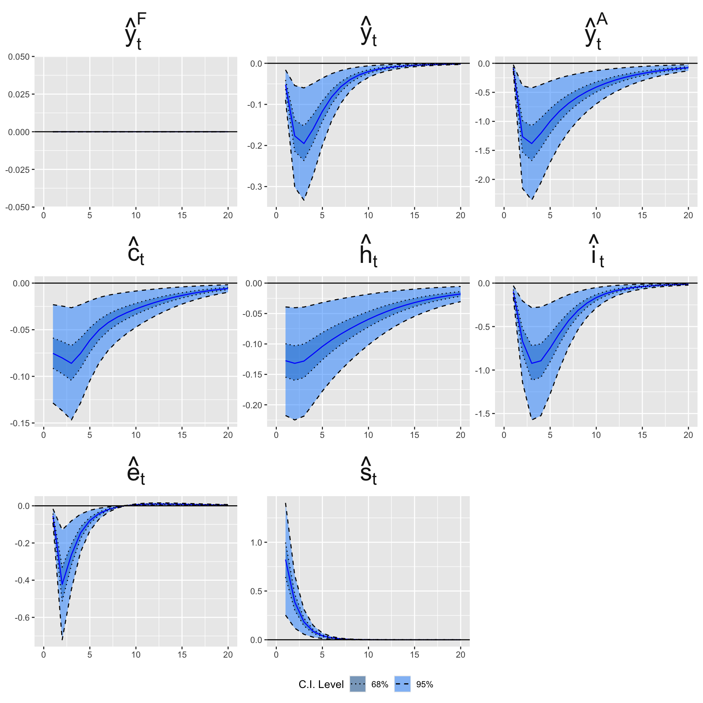

This page presents the estimation of a VAR model using the dataset built in Chapter 6.
We first estimate a restricted VAR (Section 8.3.1) to encode block exogeneity: the weather sits in one exogenous block, trading-partners’ output in a second exogenous block, and national variables in a third block that can be influenced by the first two.
We then impose contemporaneous restrictions and estimate a SVAR (Section 8.3.2).
Finally, we shock the weather equation and examine transmission to the rest of the system through impulse response functions (IRFs) (Section 8.4).
library(tidyverse)
── Attaching core tidyverse packages ──────────────────────── tidyverse 2.0.0 ──
✔ dplyr 1.1.4 ✔ readr 2.1.5
✔ forcats 1.0.0 ✔ stringr 1.5.2
✔ ggplot2 4.0.0 ✔ tibble 3.3.0
✔ lubridate 1.9.4 ✔ tidyr 1.3.1
✔ purrr 1.1.0
── Conflicts ────────────────────────────────────────── tidyverse_conflicts() ──
✖ dplyr::filter() masks stats::filter()
✖ dplyr::lag() masks stats::lag()
ℹ Use the conflicted package (<http://conflicted.r-lib.org/>) to force all conflicts to become errors
8.1 Settings
We will use the following variables in the VAR model.
Note that their order is important. Also, we identified them with respect to the block they will be in:
Weather block: drought index \((\hat{\omega}_t)\). The climate block is going to be exogenous.
Foreign block: rest-of-world GDP \((\hat{y}_t^\star)\). The variable that represents the rest of the world (here, the top trading partners). This block will not be influenced by the variations of the national weather, to reflect the idea that the country of interest is a small open economy.
To impose the restictions in the VAR, we will set to \(0\) some coefficients in the matrix of lag coefficients. \[
\begin{equation}%
\begin{bmatrix}
\colorbox{wongPurple!17}{\textbf{\textcolor{wongPurple}{$X_t^W$}}}\\
\colorbox{wongOrange!17}{\textbf{\textcolor{wongOrange}{$X_t^\star$}}}\\
\colorbox{wongBlue!17}{\textbf{\textcolor{wongBlue}{$X_{t}^{D}$}}}%
\end{bmatrix}
=C+\sum_{l=1}^{p}%
\begin{bmatrix}
A_{l}^{11} & \colorbox{wongGold!17}{\textbf{\textcolor{wongGold}{$0$}}} & \colorbox{wongGold!17}{\textbf{\textcolor{wongGold}{$0$}}}\\
\colorbox{wongGold!17}{\textbf{\textcolor{wongGold}{$0$}}} & A_{l}^{22} & \colorbox{wongGold!17}{\textbf{\textcolor{wongGold}{$0$}}}\\
A_{l}^{31} & A_{l}^{32} & A_{l}^{33}%
\end{bmatrix}%
\begin{bmatrix}
\colorbox{wongPurple!17}{\textbf{\textcolor{wongPurple}{$X_{t-l}^W$}}}\\
\colorbox{wongOrange!17}{\textbf{\textcolor{wongOrange}{$X_{t-l}^{\star}$}}}\\
\colorbox{wongBlue!17}{\textbf{\textcolor{wongBlue}{$X_{t-l}^{D}$}}}%
\end{bmatrix}
+%
\begin{bmatrix}
\eta_{t}^{W}\\
\eta_{t}^{\star}\\
\eta_{t}^{D}%
\end{bmatrix}
,
\end{equation}
\tag{8.1}\]
Let us put the name of the exogenous variables in a vector of characters:
variables_exo <- variables_types[,1]
We set the number of lags to 1:
L <-1
The number of variables:
N <-length(variables_exo)
We define a function, find_block() to be able to return in which block a variable belongs to:
#' Returns the corresponding name of the block for a variable#' #' @param name Variable name (string).find_block <-function(name) { variables_types[variables_types[, 1] == name, 2]}
For example:
find_block("wy_obs")
[1] "world"
We create a matrix with the constraints on coefficients to ensure the exogeneity of blocks: \[
\begin{bmatrix}
A_{l}^{11} & \colorbox{wongGold!17}{\textbf{\textcolor{wongGold}{$0$}}} & \colorbox{wongGold!17}{\textbf{\textcolor{wongGold}{$0$}}}\\
\colorbox{wongGold!17}{\textbf{\textcolor{wongGold}{$0$}}} & A_{l}^{22} & \colorbox{wongGold!17}{\textbf{\textcolor{wongGold}{$0$}}}\\
A_{l}^{31} & A_{l}^{32} & A_{l}^{33}%
\end{bmatrix}
\tag{8.2}\]
The equations will be written in columns in this matrix. Hence, at element \([i,j]\), the coefficient indicates whether the j\(^\text{th}\) variable can affect the i\(^\text{th}\) one. If so, the element \([i,j]\) will take the value 1; 0 otherwise.
Depending on the number of desired lags, this matrix needs to be replicated so that all the constraints imposed apply to each lag. Again, equations are written in rows.
A_l_restrict <-parse(text =str_c("cbind(",str_c(rep("A_l_restrictions", L), collapse =", "),")" )) |>eval()A_l_restrict <-do.call(cbind, rep(list(A_l_restrictions), L))base_nms <-colnames(A_l_restrictions)colnames(A_l_restrict) <-paste0( base_nms, "_", rep(seq_len(L), each =length(base_nms)))# Let us add an intercept (const)A_l_restrict <-cbind(A_l_restrict, const =rep(1, nrow(A_l_restrict)))A_l_restrict
Let us load the data obtained gathered in Chapter 6.
load('../data/df_finale_ebook.rda')
Total production is denoted y_tot_obs in the base we just loaded, let us change this to simply y_obs. Then, let us keep only the variables of interest.
In Chapter 6, we made sure that positive values of the Soil Moisture Deficit index depict droughts. In the impulse response functions, we will impulse positive standard deviation shocks. This ensures that a positive shock depicts an increase in dryness.
We know there is no missing values between different dates so, we can use na.omit() without risk. There is only one missing value for the reer.
df_finale <-na.omit(df_finale)
It will be more convenient to cast the series into a time series object (of class ts).
We will use the functions from {vars} to estimate the VAR (note that it masks the function select() from {dplyr}, which leads us to use dplyr::select() afterwards, if needed).
library(vars)
Loading required package: MASS
Attaching package: 'MASS'
The following object is masked from 'package:dplyr':
select
Loading required package: strucchange
Loading required package: zoo
Attaching package: 'zoo'
The following objects are masked from 'package:base':
as.Date, as.Date.numeric
Loading required package: sandwich
Attaching package: 'strucchange'
The following object is masked from 'package:stringr':
boundary
Loading required package: urca
Loading required package: lmtest
The function VARselect() estimates infomation criteria and final prediction error for sequential increasing the lag order up to a VAR(p)-proccess.
If the number of lags that produces the best fit with respect to the criterion you want to use is different from 1, set the value to L to the desired value in Section 8.1, and run the above codes again.
8.3.1 Restricted VAR
We first need to estimate the VAR without constraints, i.e., without imposing \(0\) coefficients in the matrix shown in Equation 8.2:
var_1 <-VAR(data, p = L, type ="const")
The restrictions can be added to estimate the model shown in Equation 8.1:
We further need to impose structure on the contemporaneous relationships amont variables. We estimate a Structural VAR (SVAR) model to do so: \[
\begin{equation*}
\colorbox{wongGreen!17}{\textbf{\textcolor{wongGreen}{$A_{0}$}}} X_{t} = C + \sum_{l=1}^{p} A_{l} X_{t-l} + \colorbox{wongGold!17}{\textbf{\textcolor{wongGold}{$\eta_{t}$}}},
\end{equation*}
\tag{8.3}\]
The matrix \(\textcolor{wongGreen}{A_0}\) is a lower triangular matrix which encodes the contemporaneous restrictions, and \(\textcolor{wongGold}{\eta_{t}}\) are the orthogonal structural shocks. It ensures the contemporaneous exogeneity of the weather and of foreign variables. Those variables do not react within the quarter to domestic shocks, while domestic variables may react instantly to them. The order of the variables matters. Variables ordered earlier can contemporaneously affect variables ordered later, but not the other way around. In addition, we put 1s on the diagonal to fix the scale of each equation so that the shocks \(\eta_t\) are structural shocks, i.e., orthogonal and scaled, which is required to compute the IRFs.
For example, the 4th row (row for y_a_obs) states that the agricultural output can contemporaneously depend only on the weather (first column), foreign GDP (second column) and domestic output (third column).
amat <- A_l_restrictionsamat[amat ==1] <-NAamat[upper.tri(amat)] <-0diag(amat) <-1amat
smdi_obs wy_obs y_obs y_a_obs h_obs c_obs i_obs reer_obs
smdi_obs 1 0 0 0 0 0 0 0
wy_obs 0 1 0 0 0 0 0 0
y_obs NA NA 1 0 0 0 0 0
y_a_obs NA NA NA 1 0 0 0 0
h_obs NA NA NA NA 1 0 0 0
c_obs NA NA NA NA NA 1 0 0
i_obs NA NA NA NA NA NA 1 0
reer_obs NA NA NA NA NA NA NA 1
: we enforce weather/foreign as exogenous blocks in the lag structure.
:
: \begin{itemize}
We use a nested-model F-test to assess whether the weather variable (smdi_obs) improves fit for each target variable (output, agri output, hours, consumption, investment, REER).
To do so, we define a function, fisher_test(), that builds two linear regressions:
A complete model, which includes the target’s admissible contemporaneous regressors (from the SVAR \(\color{wongGreen}A_0\) pattern in amat, if contemp = TRUE) and admissible lagged regressors (from the VAR mask A_l_restrict).
A restricted model, with the same specification, but with smdi_obs removed (both its contemporaneous and/or lag terms, depending on the setting).
It then compares the residual sums of squares (RSS) to form \[
F = \frac{(\text{RSS}_R - \text{RSS}_C)/k}{\text{RSS}_C/(n - p - k)},
\tag{8.5}\] where \(k\) is the number of coefficients dropped and \(p\) the number in the restricted model. A small p-value indicates that weather adds information.
The fisher_test() function.
#' Fisher Test for the Inclusion of the Weather Variable#' #' @description#' Performs a nested-model Fisher test to evaluate whether including the weather#' variable (`smdi_obs`) improves the fit of an equation in the restricted #' VAR/SVAR system.#' The function compares a complete model (including all admissible #' contemporaneous and lagged regressors) to a restricted model where the #' weather variable (and optionally its lags) is removed.#' #' @param variables_rest Character vector of variables included in the baseline#' (restricted) model. Include the weather variable `"smdi_obs"` and possibly #' other variables.#' @param variables_interest Character string giving the dependent variable #' to test.#' @param print_res If `TRUE` (default), the equations of the models and the#' summary of the results are printed in the console.#' @param contemp If `TRUE` (default), for the target equation (row in `amat`), #' any entry that is `NA` (i.e., free to estimate) is included; zeros are#' excluded. If `FALSE`, only lagged effects are considered.#' #' @details#' The admissible regressors are determined from the restriction matrices:#' * The contemporaneous matrix `amat` (from the SVAR): if a coefficient#' is `NA` in the row corresponding to the dependent variable, the associated#' variable is included.#' * The lag restriction matrix _A_l_restrict_ (from the restricted VAR):#' if the entry equals `1` in that row, the corresponding lagged variable#' is included.#' For each dependent variable, two linear models are estimated:#' * Complete model: includes all admissible contemporaneous and lagged #' regressors.#' * Restricted model: same as the complete model but with the weather variable#' (and its lags, if any) removed.#' #' The Fisher test statistic is computed as:#' \deqn{#' F = \frac{(RSS_R - RSS_C)/k}{RSS_C / (n - p - k)},#' }#' where \eqn{RSS_R} and \eqn{RSS_C} are the residual sums of squares of the#' restricted and complete models, respectively; \eqn{k} is the number of#' restrictions, and \eqn{p} is the number of estimated parameters in the#' restricted model.#' #' @returns A tibble with the following columns:#' * `var`: tested dependent variable,#' * `F`: computed F-statistic,#' * `Pr(>F)`: associated p-value.#' fisher_test <-function(variables_rest, variables_interest, print_res =TRUE, contemp =TRUE) { variables <-c(variables_rest, variables_interest)# Complete model data_tmp <-as_tibble(data) data_tmp <- data_tmp |> dplyr::select(!!variables) form <-str_c(variables_interest, " ~ 1")# i <- 1for (i in1:length(variables)) { var_name <- variables[i] var_name_new <-str_c(variables[i], "_1")# Contemporaneous effectif (contemp) { ind <-which(rownames(amat) == variables_interest)if (is.na(amat[ind, which(colnames(amat) == var_name)])) { form <-str_c(form, var_name, sep =" + ") } }# Lagged effect ind <-which(rownames(A_l_restrict) == variables_interest)if (A_l_restrict[ind, which(colnames(A_l_restrict) == var_name_new)] ==1) { data_tmp <- data_tmp |>mutate(!!var_name_new := dplyr::lag(!!sym(var_name),1)) form <-str_c(form, var_name_new, sep =" + ") } } mod_complete <-lm(as.formula(form), data = data_tmp)# Restricted model variables_rest_r <- variables_rest[-which(variables_rest =="smdi_obs")] variables_r <-c(variables_rest_r, variables_interest) data_tmp_r <-as_tibble(data) |> dplyr::select(c(!!variables_rest_r, !!variables_interest)) form_r <-str_c(variables_interest, " ~ 1")# i <- 1for (i in1:length(variables_r)) { var_name <- variables_r[i] var_name_new <-str_c(variables_r[i], "_1")# Contemporaneous effectif (contemp) { ind <-which(rownames(amat) == variables_interest)if (is.na(amat[ind, which(colnames(amat) == var_name)])) { form_r <-str_c(form_r, var_name, sep =" + ") } }# Lagged effectif (A_l_restrict[ind, which(colnames(A_l_restrict) == var_name_new)] ==1) { data_tmp_r <- data_tmp_r |>mutate(!!var_name_new := dplyr::lag(!!sym(var_name),1)) form_r <-str_c(form_r, var_name_new, sep =" + ") } } mod_restricted <-lm(as.formula(form_r), data = data_tmp_r) rss_r <-sum(mod_restricted$residuals^2) rss_c <-sum(mod_complete$residuals^2) const <-0 p <- mod_restricted$rank-const k <- mod_complete$rank - const - p n <-length(mod_restricted$residuals) F_obs <- ((rss_r - rss_c) / k) / (rss_c / (n - (k+p+const))) (F_tab <-qf(p =1-0.05, df1 = p, df2 = n - (k+p+1))) p_value <- (1-pf(q = F_obs, df1 = p, df2 = n - (k+p+const)))cat("Complete model:\n---------------\n")cat(form)cat("\n\nRestricted model:\n---------------\n")cat(form_r)cat("\n")if(print_res) texreg::screenreg(l =list(mod_complete, mod_restricted),custom.model.names =c("Complete", "Restricted") ) |>print()tibble(var =!!variables_interest, F = F_obs, `Pr(>F)`= p_value)}
We consider three testing setups:
Bivariate, past + current: we test whether weather (contemporaneous and its lags, as allowed) improves a bivariate regression (target on itself and weather).
Multivariate, past only: we test whether lagged weather adds predictive power beyond the full set of other lagged variables.
Multivariate, past + current: we test whether both contemporaneous and lagged weather terms improve fit in the SVAR-consistent equation.
We define a function, irfs_mc(), which draws multiple shocks from a Normal distribution for a given shocked variable and compute the response to the system for each of the shocks.
The simulated responses are summarized into 68% and 95% credible intervals: \[
\text{IRF}_{h}^{(s)} = \varepsilon_s \cdot \text{IRF}_h,
\quad \varepsilon_s \sim \mathcal{N}(0,1)
\]
#' Returns a tibble with the IRFs values for a shocked variable#' and the credible intervals as computed with Monte-Carlo simulations#'#' @param irfs IRFs obtained with `irf_varest()`#' @param var_shocked Name of the variable shocked in `irfs$irf`#' @param runs No. draws for the Monte-Carlo simulations (default: 10,000)#'irfs_mc <-function(var_shocked, irfs,runs =10000) { sim <-vector("list", runs) n_variables <-ncol(irfs$irf[[var_shocked]])for (i in1:length(sim)) { x <-matrix(0, ncol = n_variables, nrow =nrow(irfs$irf[[var_shocked]])) x[1,1] <-sqrt(abs(rnorm(n =1, mean =0, sd =1))) # Generate a random shock sim[[i]] <- x[1,1] * irfs$irf[[var_shocked]] |>as_tibble() sim[[i]]$horizon <-1:nrow(irfs$irf[[var_shocked]]) } sim <- sim |>bind_rows() |>gather(var_response, value, -horizon) |>group_by(horizon, var_response) |>summarise(mean =mean(value),sd =sd(value),lower_95 =quantile(value, probs = .05),upper_95 =quantile(value, probs = .95),lower_68 =quantile(value, probs = .32),upper_68 =quantile(value, probs = .68),.groups ="drop" ) |>mutate(var_shocked =!!var_shocked) |>rename(value = mean) sim}
Important
In the function irfs_mc(), since irfs$irf[[var_shocked]] already gives the response to a one–standard deviation shock, multiplying by a random \(\mathcal{N}(0,1)\) means that we are simulating IRFs for random shock magnitudes drawn in standard deviation units. So the simulated values are expressed in the same units as the variables themselves (e.g., percentage deviations, log-deviations, etc.), per one-standard deviation of the shocked variable.
In our model, since the macro variables are detrended and expressed as log-deviations from trend, the IRFs of the weather shock measure approximatively the percentage responses to a one standard-deviation drought shock.
We apply this function to perform 10,000 draws so as to get the 0.95% and 68% credible intervals for the IRFs to a shock to the weather variable.
# This takes about 30sec to rundf_irfs <-# pbapply::pblapply(names(irfs$irf), irfs_mc, irfs = irfs) |>lapply(names(irfs$irf), irfs_mc, irfs = irfs) |>bind_rows()
Let us have a look at the beginning of these IRFs. We begin with looking at the response of the rest-of-the-world GDP, which is supposed to be 0 because of all our restrictions.
The table corresp_names with variable names and different labels (long, short, formulas), and the table possibilites with all combinations of two variables.
corresp_names <-tribble(~name_r, ~long_name, ~short_name, ~pm_name,"wy_obs", "Foreign Output", "$\\Delta log\\left(Y_t^*\\right)$", "hat(y)[t]^F","wp_obs", "Foreign CPI Inflation", "$\\pi_t^*$", "hat(pi)[t]^F","wr_obs", "Foreign Interest Rate", "r_t^*", "hat(r)[t]^F","wp_a_obs", "Foreign Ag. Price Infl.", "\\Delta log \\left(p_t^{A*}\\right)$", "p[t]^D","wy_a_obs", "Foreign Ag. Output", "$\\Delta log \\left(Y_t^{A*}\\right)$", "Y[t]^D","oil_obs", "Crude Oil Inflation", "$oil_t$", "hat(oil)[t]","y_obs", "Output", "$\\Delta log \\left(Y_t^d\\right)$", "hat(y)[t]","y_a_obs", "Ag. Output", "$\\Delta log \\left(X_t^A\\right)$", "hat(y)[t]^A","p_obs", "CPI Inflation", "$\\pi_t^C$", "hat(pi)[t]","ratio_p_obs", "Rel. Prices", "$\\pi_{x,t}^A / \\pi_t^C$", "hat(pi)[t] / hat(pi)[t]^A","p_a_obs", "Ag. Inflation", "$log \\left(\\pi_{x,t}^A\\right)$", "hat(pi)[t]^A","c_obs", "Consumption", "$log \\left(c_{t}\\right)$", "hat(c)[t]","h_obs", "Hours Worked", "\\Delta log \\left($h_t\\right)$", "hat(h)[t]","i_obs", "Investment", "$\\Delta log \\left(i_t\\right)$", "hat(i)[t]","q_obs", "Stock Prices", "q_t", "hat(q)[t]","im_obs", "Imports", "\\Delta log \\left(im_{t}\\right)$", "hat(im)[t]","x_obs", "Exports", "$\\Delta log \\left(x_{t}\\right)$", "hat(x)[t]","tb_obs", "Trade Balance", "$tb_{t}$", "hat(tb)[t]","ex_rate_obs", "Real Ex. Rate", "$rer_t$", "hat(e)[t]","reer_obs", "Real Eff. Ex. Rate", "$reer_$", "hat(e)[t]","r_obs", "Interest Rate", "$r_t$", "hat(r)[t]","smdi_obs", "Weather", "$\\varepsilon_{t}^{W}$", "hat(s)[t]","r_y_hp", "GDP Deviation From HP Filter Trend", "$y_t$", "y[t]","r_y_a_hp", "agricultural GDP Deviation From HP Filter Trend", "$y_t^A$", "y[t]^A","smdi", "Wheater", "$\\varepsilon_{t}^{W}$", "hat(s)[t]","y_w", "Foreign Output", "$\\Delta log\\left(Y_t^*\\right)$", "hat(y)[t]^F","y", "Output", "$\\Delta log \\left(Y_t^d\\right)$", "hat(y)[t]")# We put the variables in a specific order when creating `corresp_names`.# Let us make sure, by casting column `name_r` as a factor, that the order is# preserved.noms_ordonnees <- corresp_names$name_rcorresp_names <- corresp_names |>mutate(name_r =factor(name_r, levels = noms_ordonnees))# Listing all possible subsets of 2 variablespossibilites <-expand.grid(Var1 =levels(corresp_names$name_r),Var2 =levels(corresp_names$name_r)) |>arrange(Var1, Var2) |>mutate(title =str_c(Var1, "-", Var2)) |>as_tibble()
We define a small function, c_name(), to retrieve the label of a variable in the tibble corresp_names.
The c_name() function.
#' Returns the label of a variable by looking it up in `corresp_names`#' @param x Variable name (column `name_r` in `corresp_names`)#' @param type Type of desired label (`"pm"`, `"short"`, `"long"`). See details.#'#' @returns A character vector with the label of the variable.#' @details#' The desired type corresponds to the prefix of the column names of#' `corresp_names`: `"pm"` for R formulas, `"short"` for LaTeX formulas, and#' `"long"` for a string describing the variable.#'#' @examples#' c_name("wy_obs", "pm")#'c_name <-function(x, type =c("pm", "short", "long")){ type <-match.arg(type) type <- type %>%str_c("_name") ind <-match(x, corresp_names$name_r) corresp_names[ind, ] |>pull(type)}
We define a function, get_df_plot() to reshape the IRFs results for later use in a ggplot graph.
Figure 8.2: VAR impulse response to a standard drought shock. For macro variables expressed in log-deviations from their trend, the y-axis represents, approximatively, the percentage response to a one-standard deviation weather shock.

# Export the IRFsreadr::write_csv(df_irfs, file ="../data/var_irfs_ebook.csv")